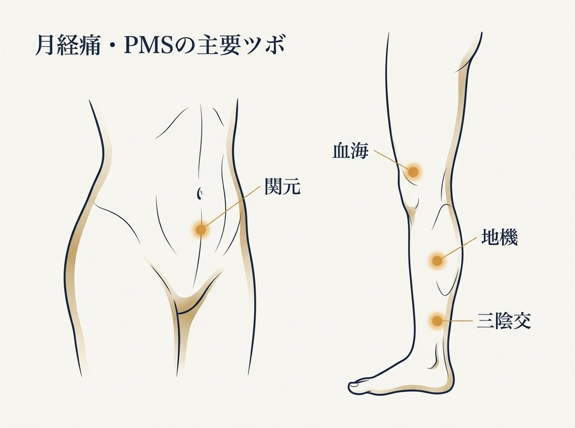

月経前症候群の鍼灸
生理3〜10日前のイライラや頭痛・むくみに対し、気血と自律神経を整える施術と体質別の引き算養生で寄り添います。


院長YouTube解説・関連動画
月経前症候群は月経が起こる前に現れる精神的な症状や身体的な症状
月経前症候群は、月経が起こる前に現れる精神的な症状や身体的な症状のことです。主にイライラしたり情緒不安定になったり、胸の張りやむくみ、体重の増加などの症状が現れます。
月経の何日前に現れるかということには個人差があります。多くの場合は、月経が起こる3～10日前に起こります。ほとんどの場合は月経が始まると症状が軽くなったり無くなったりします。
月経前症候群は女性ホルモンと関係している
月経前症候群の原因は明らかになっていません。しかし、月経前症候群が起こる時期が主に排卵後から月経前であることから女性ホルモンと関係していると考えられています。
他にも、ストレスや食事や生活習慣が関係しているとも考えられており、ビタミンB6が不足すると起こりやすいとも言われています。
月経前症候群は、体に起こるいろいろな要因が組み合わさって起こると考えられているのです。
・ エストロゲンとプロゲステロンのバランス
月経周期の中で、エストロゲンとプロゲステロンという2つの主要な女性ホルモンのバランスが変動します。排卵後にプロゲステロンのレベルが上昇し、エストロゲンとのバランスが崩れることが、PMSの症状を引き起こす一因と考えられています。
・プロラクチンの関与
プロラクチンは、乳腺の発達と乳汁分泌を促進するホルモンであり、月経前にそのレベルが上昇することがあります。プロラクチンの過剰分泌が、乳房の張りや痛みを引き起こす原因と考えられています。
・セロトニン
セロトニンは、気分、睡眠、食欲などを調整する脳内の神経伝達物質です。月経前にセロトニンのレベルが低下することが、PMSの症状、特に気分の落ち込みやうつ症状、食欲の変動に関与していると考えられています。
・ガンマ-アミノ酪酸
GABAは、神経活動を抑制し、リラックスを促進する神経伝達物質です。ホルモンの変動がGABAの作用に影響を与えることで、不安感や睡眠障害が引き起こされる可能性があります。
PMSは遺伝的な要因が関与している可能性があります。家族歴がある女性は、PMSを発症するリスクが高いとされています。また、特定の遺伝子が、ホルモンの感受性や神経伝達物質の調節に影響を与え、PMSの症状を悪化させる可能性があります。
カルシウム、マグネシウム、ビタミンB6などの栄養素が不足すると、PMSの症状が悪化することがあります。特にカルシウムとビタミンB6は、PMSの症状を軽減する効果があるとされています。さらに、カフェインやアルコールの過剰摂取は、PMSの症状、特に不安感や睡眠障害を悪化させる可能性があります。
・運動不足
定期的な運動は、ホルモンバランスを調整し、気分を改善する効果があります。運動不足は、PMSの症状を悪化させる一因となることがあります。
・ストレス
ストレスがかかると、コルチゾールというホルモンが分泌され、これがPMSの症状を悪化させることがあります。また、ストレスが神経伝達物質のバランスを乱すこともあります。
・ホルモンの影響
プロゲステロンの変動により、体内に水分が保持されやすくなります。これが原因で、体重増加、腹部膨満感、むくみが生じることがあります。
・食塩摂取
塩分の多い食事を摂ると、体内の水分保持が促進され、むくみや膨満感が悪化することがあります。
・基礎体温
月経周期に伴い、基礎体温が変動します。排卵後に体温が上昇することで、体調不良や不快感を感じることがあります。また、体温が低下しやすい環境にいると、PMSの症状が悪化することがあります。
・避妊薬
一部のホルモン避妊薬がPMSの症状を改善する場合がありますが、逆に悪化させることもあります。これは、避妊薬がホルモンバランスに影響を与えるためです。さらに、一部の薬は、神経伝達物質やホルモンバランスに影響を与え、PMSの症状を悪化させることがあります。
現れる症状は精神的なものと身体的なものがある
月経前症候群で現れる症状は精神的なものと身体的なものがあり非常に様々です。月経前症候群には現れる症状にも現れる期間にも大きな個人差があるのです。
精神的な症状では、イライラや情緒不安定、うつ状態、自己評価や集中力の低下、眠気や睡眠障害、食欲不振や過食などが現れます。
身体的症状では、おなかや乳房の張りや痛み、頭痛や腰痛、肩こりやむくみ、体重の増加、めまいや肌トラブルなどの症状が現れます。
イライラすることによって人にあたってしまったり、自己評価が下がり落ち込んでしまったりする人も多いです。
症状の程度にも大きな個人差があります。しかし、症状の程度がひどい場合も月経が始まるとほとんどの症状が軽くなったり無くなったりします。
・下腹部痛
子宮や骨盤周辺の筋肉が緊張することによる痛みで、月経が近づくと痛みが増すことがあります。
・腹部膨満感体内に水分が保持されることで、腹部が張ったように感じることがあります。ガスが溜まりやすくなることもあります。
・乳房痛
ホルモンの影響で乳房が腫れたり、敏感になったりすることがあります。乳房全体が痛むこともあれば、特に乳頭が敏感になることもあります。
ホルモン変動による影響で、頭痛が頻繁に起こることがあります。片頭痛として現れる場合もあり、これが日常生活に支障をきたすことがあります。
骨盤周りの筋肉や靭帯が緊張することで腰に痛みが現れることがあります。また、体内の水分保持によって関節が痛むこともあります。
・関節痛
体がむくむことで、関節にも痛みや違和感が生じることがあります。
・全身の疲労感
体全体が重く感じられ、疲れやすくなることがあります。体力が低下し、集中力が続かないこともあります。
昼間に異常に眠気を感じることがあり、日常生活に影響を及ぼすことがあります。
ホルモンの変動により、腸の動きが遅くなり、便秘がちになることがあります。
逆に、腸が過敏になり、下痢を引き起こすこともあります。便秘と下痢が交互に現れることもあります。
・むくみ
体内に水分が溜まりやすくなることで、手足がむくむことがあります。これが靴や指輪がきつく感じる原因となることがあります。朝に顔がむくむことがあり、目の周りや頬に腫れを感じることがあります。
・食欲の変動
特定の食べ物、特に甘いものや塩辛いものを強く欲することがあります。これは、ホルモン変動が食欲を調整する脳の機能に影響を与えるためです。逆に、食欲が減退し、食事をとることが億劫に感じることもあります。
・ニキビや吹き出物
ホルモンバランスの乱れが原因で、皮脂分泌が増加し、ニキビや吹き出物ができやすくなります。
・肌の乾燥
一部の女性は、肌が乾燥しやすくなり、かゆみや炎症を感じることがあります。
・イライラ
些細なことに対してもイライラしやすくなることがあります。感情のコントロールが難しくなり、怒りっぽくなることがあります。普段は気にならないことでも、すぐに腹が立つようになることがあります。
・不安感や緊張感
理由のない不安感が強まることがあります。未来のことに対して過度に心配することが増えることもあります。常に緊張しているような感覚があり、リラックスできなくなることがあります。
・抑うつ感や悲しみ
気分が落ち込みやすく、無気力を感じることがあります。うつ症状として現れる場合もあります。些細なことで涙が出る、悲しみを感じやすくなることがあります。
・集中力や記憶力の低下
仕事や学業に集中することが難しくなり、ミスが増えることがあります。短期的な記憶力が低下し、物忘れが多くなることがあります。
・睡眠障害
寝付きが悪くなる、夜中に目が覚めるなどの不眠症状が現れることがあります。これにより、翌日に疲れが残ることがあります。逆に、いつもよりも多く睡眠を必要とするようになり、日中の活動に支障をきたすこともあります。
・社会的引きこもり
他人と関わることが億劫になり、社会的に引きこもりがちになることがあります。友人や家族との交流を避ける傾向が強まります。社交的な場面に対して不安を感じ、回避する行動が見られることがあります。
・活動意欲の低下
普段楽しんでいた活動に対して興味を失い、積極的に行動する意欲が低下することがあります。 活動意欲の低下が、仕事や学業への取り組みにも影響を与え、生産性が低下することがあります。
月経前症候群と上手に付き合うためには
日本では月経のある女性の約70～80％が月経前症候群の症状があると言われています。ほとんどの人が悩まされているのです。
毎月、調子が悪い時期だと思い、気分転換をしたりリラックスする時間にしたりと前向きに取り組み上手に付き合っていくことがお勧めです。
月経前症候群と上手に付き合うためには、自分の症状が起こる時期や種類、程度などを自分自身で把握しておくことが大切です。
月経前症候群の時期は、心も体も不安定になりがちです。気分の浮き沈みやイライラに悩まされる方も多いかと思います。そんなときインは、少しでも心が軽くなる気分転換法を試すこともオススメです。
忙しい日常の中で、ふとした瞬間に深呼吸をしてみましょう。大きく息を吸って、ゆっくり吐き出すだけで、心が少し落ち着くのを感じるはずです。
さらに、軽いストレッチを加えると、体の緊張もほぐれ、リラックス効果が倍増します。お風呂上がりや寝る前のリラックスタイムに取り入れるのがおすすめです。
🎥 他のYouTube切り抜き・解説を読む（あと1件）▼
生理前の左足の痛みで悩んでいるTさんの場合
主な訴え：左足の痛み。歩くのも重だるく、背中もガチガチ。腰から下が痛く、次第に左足が痛くなる。生理前に激痛がある。右はあまり感じない。
来院のきっかけ：インスタグラム
来院回数：1回目の鍼灸
Tさんの症状を聞き、体を見たところ、女性ホルモン型脳過敏症であると判断しました。この症状は、女性ホルモンの影響で脳が興奮し肩こりや首こりが辛いと認識させられている状態で、女性ホルモンが安定すればすぐに落ち着きます。
この症状は、女性ホルモンの生理周期によってこり感が大きく増減します。女性ホルモンが安定すれば落ち着きます。
脳が興奮すると脳が血流と栄養を欲するため血流を悪くさせようとする体の反応があります。そのため、手と足の温度が一定になればゴールです。肩は硬くてOKで姿勢が悪くてもOKですが、症状がない状態になってほしいです。
Tさんは右側に大きな子宮筋腫があるようですが、今の感じだと全く関係ありません。リンクする場合は同じ側に症状が出ます。
この症状は体の悪い部分と意識で感じる辛さの場所が違うため難しいです。首肩の張り感があると言ってそこに鍼を刺しても改善されません。足があったまったサインがないとあまり変わらないのです。これは、代謝が悪くて起きているわけではなく脳が自分で血流を悪くしているためです。
この症状は揉まれれば揉まれるほどどんどん悪くなってしまいます。そのため、この症状と吸い玉は相性が悪いです。
この症状は落ち着かせるための算段も大事です。カフェイン禁止、激辛料理禁止、首のマッサージ禁止です。やってはいけないことを避けることが大事なのです。足して改善していくのではなく、引いて沈めるイメージです。
▼ 詳しく知りたい項目だけタップして開けます（全項目の医学解説を収録）
01. 原因とメカニズム
なぜ症状が起きるのか・鍼灸の作用機序を読む
▼
01. 原因とメカニズム
なぜ症状が起きるのか・鍼灸の作用機序を読む
月経の3〜10日前に始まり月経開始とともに軽快する心身の不調で、日本人女性の約7〜8割が経験するとされます。エストロゲン・プロゲステロンの変動に伴うセロトニン・GABAの低下やプロラクチン上昇、ストレス（コルチゾール）、ビタミンB6・カルシウム・マグネシウム不足、カフェイン・塩分過多が関与します。中には強い刺激で悪化する女性ホルモン型脳過敏症タイプもみられます。
なぜ鍼灸で改善へ向かうのか？（作用機序の図解）
月経前症候群に対する鍼灸は、視床下部-下垂体-卵巣（HPO）軸と骨盤内血流の調整機序を通じて、お体本来の回復力を引き出します。
骨盤内臓器と同じ脊髄分節を共有する腰仙部や下肢経穴へ、体質に合わせた刺激を行います。
骨盤周囲の自律神経反射を介して子宮・卵巣周囲の血流を促し、冷えやうっ血を和らげます。
ホルモン変動で過敏になった視床下部を鎮静し、ほてり・発汗・気分の揺らぎを穏やかにします。
婦人科治療とも協調しながら、月経・妊娠・更年期それぞれの負担を軽くする土台を整えます。
02. よくあるお悩み
このような症状はありませんか？（4項目）
▼
02. よくあるお悩み
このような症状はありませんか？（4項目）
- ✓生理前にイライラ・落ち込み・不安が強くなる
- ✓生理前に頭痛・下腹部痛・胸の張りやむくみが出る
- ✓強い眠気や不眠、食欲の変化・甘いもの欲求がある
- ✓生理が始まると心身の不調がすっと軽くなる
03. 当院の施術アプローチ
施術の進め方・改善のポイントを見る
▼
03. 当院の施術アプローチ
施術の進め方・改善のポイントを見る
04. ツボ詳細・セルフケア一覧
片頭痛・緊張型・群発・連日性頭痛のツボ図解（6穴）
▼
04. ツボ詳細・セルフケア一覧
片頭痛・緊張型・群発・連日性頭痛のツボ図解（6穴）
実際の施術ではお一人おひとりの体質・症状に合わせて選穴しますが、片頭痛・緊張型頭痛・群発頭痛・慢性連日性頭痛の予防・鎮静ケアの臨床でよく用いられる代表的なツボの目安です。
| ツボ名 | 位置の目安 | 主な狙い | セルフケアの注意点 |
|---|---|---|---|
| 百会（ひゃくえ） | 頭頂部の中央 | 頭全体の重だるさ・自律神経の過敏鎮静 | 突発的な激しい頭痛は直ちに脳神経外科を受診してください。 |
| 率谷（そっこく） | 耳の一番上から指2本分上の側頭部 | 片頭痛のズキズキ感・側頭筋の過緊張緩和 | 拍動性頭痛の発作中は強く揉まず静かに冷やすか遠隔穴を使います。 |
| 太陽（たいよう） | こめかみのくぼみ | こめかみの痛み・眼精疲労由来の頭痛ケア | 指の腹で優しく圧迫してゆっくり離します。 |
| 風池（ふうち） | 後頭部の生え際のくぼみ | 緊張型頭痛・後頭部痛・大後頭神経の緊張緩和 | デスクワークの合間の首ケアに非常に有効です。 |
| 合谷（ごうこく） | 手の甲、親指と人差し指の間 | 三叉神経領域の痛みを遠隔から鎮める国際標準穴 | 片頭痛の予兆を感じたときにも安全に押せます。 |
| 太衝（たいしょう） | 足の甲、親指と人差し指の骨の間 | ストレス・気圧変化・月経関連の頭痛予防サポート | 頭痛専門医の予防薬治療と並行して継続します。 |
05. 医学的根拠・国際査読論文（PubMed / Cochrane）
科学的エビデンス・出典リンク一覧（4件）
▼
05. 医学的根拠・国際査読論文（PubMed / Cochrane）
科学的エビデンス・出典リンク一覧（4件）
国際的な医学データベース（PubMed・Cochrane等）で報告されている片頭痛・緊張型頭痛・群発頭痛・慢性連日性頭痛の予防・鎮静ケア領域の代表的な査読済み鍼灸研究をまとめています（標準治療との併用や研究上の限界を含めて正確に掲載）。
| 年・研究デザイン | 対象・規模 | 主な結果 | 限界・出典 |
|---|---|---|---|
| 2016年 Cochraneレビュー | 原発性月経困難症 42 RCTs（n=4,640） | NSAIDs比較で疼痛緩和率（OR 4.99）・有害事象減少（OR 0.10）を示唆。シャム比較は一貫せず。 | エビデンス確実性は低〜非常に低。鎮痛薬の補完として位置づけ。 Cochrane (PMID: 27087494) |
| 2013年 Cochraneレビュー | 更年期ホットフラッシュ 16 RCTs（n=1,155） | 無治療比で頻度（SMD -0.50）・重症度（SMD -0.54）を中等度改善、シャム比でも重症度小幅改善。 | ホルモン補充療法（HT）より効果小。HT不適応時の補完選択肢。 Cochrane (PMID: 23897589) |
| 2018年 Cochraneレビュー | PMS・PMDD 5 RCTs（n=277） | シャム比較で気分・身体症状・QOL改善を示唆、有害事象の群間差なし。 | 小規模・試験数少（GRADE低〜非常に低）。 Cochrane (PMID: 30105749) |
| 2018年 大規模多施設RCT | 体外受精（IVF）848名（豪州・NZ 16施設） | 胚移植前後の短期3回鍼 vs シャムで生児出生率18.3% vs 17.8%（RR 1.02）と有意差なし。 | 出生率向上の直接根拠は未確立。ストレス・冷えの補完ケアとして説明。 JAMA (PMID: 29800212) |
参考文献・出典
- 2016年 Cochraneレビュー（原発性月経困難症 42 RCTs（n=4,640））— Cochrane (PMID: 27087494)
- 2013年 Cochraneレビュー（更年期ホットフラッシュ 16 RCTs（n=1,155））— Cochrane (PMID: 23897589)
- 2018年 Cochraneレビュー（PMS・PMDD 5 RCTs（n=277））— Cochrane (PMID: 30105749)
- 2018年 大規模多施設RCT（体外受精（IVF）848名（豪州・NZ 16施設））— JAMA (PMID: 29800212)
06. よくある質問（FAQ）
よくあるご質問を見る（2件）
▼
06. よくある質問（FAQ）
よくあるご質問を見る（2件）
Q. 生理前の不調にマッサージや強めの刺激は効果的ですか？
脳過敏傾向のあるPMSタイプでは、首への強いマッサージや過度な刺激が逆に不調を悪化させることがあります。当院では状態を見極め、穏やかな刺激と引き算の養生をご提案します。
Q. 病院の低用量ピルや漢方（加味逍遥散など）と併用できますか？
はい、問題なく併用いただけます。お薬によるホルモン・症状コントロールを尊重しつつ、自律神経や冷え・睡眠の質を整える補完ケアとしてサポートします。
あわせて読まれる関連疾患（女性のお悩み）
閉経前後のホルモン急減によるほてり・不眠・不安に対し、女性ホルモン関連のツボと七情に応じたお灸で心身を調える施術です。
女性ホルモンの変動による心身の不調（血の道症）に対し、血海・三陰交・太衝・太渓で冷えと気血の滞りを整える東洋医学ケアです。
外陰部〜肛門周囲に強い痒みが生じる症状です。医療機関での原因特定を優先し、ツボ刺激と保湿養生で再発を防ぎます。
外陰部に痒みや痛み、赤みが生じる炎症です。医療機関での原因鑑別と治療を優先し、ツボケアで巡りと免疫を支えます。
細菌感染による卵管の炎症で、急性期は抗菌薬治療が必須です。治療後の回復期にツボ刺激で下腹部の巡りを整えます。
排卵後の黄体ホルモン分泌が不足し子宮内膜が整いにくい状態です。婦人科治療と併用し、ツボ刺激で血流を支えます。
CLINICAL RECOVERY CASES
✨ 実際の臨床改善事例・回復経過を見る
銀座本院をはじめ各院での実際の改善事例を症状別に絞り込んでご確認いただけます。
おひとりで悩まず、まずはご相談ください
銀座本院・川口・大宮・横浜・博多・田無の各院でご予約を承っております。